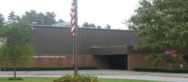

Navigation
About
Set on a rural 80-acre campus, Old Colony provides state-of-the-art technical training with a rigorous academic curriculum. A small, safe, immaculate school and meticulously maintained grounds provide the ideal environment for the development of the region’s future technicians, scholars and skilled labor force.
Old Colony’s philosophy is student-centered with the individual needs of each child of paramount importance. A warm and caring staff with a low pupil/teacher ratio ensures the opportunity for success for every child. Old Colony is fully accredited by the New England Association of Schools and Colleges, and individual occupational areas are also certified by state agencies and national associations.
Old Colony is recognized for fostering a nurturing environment. The school maintains a culture of learning which contributes to a school atmosphere with high student and staff morale. A system of open communication encourages pride in achievement and a unified school spirit.
Old Colony Regional Vocational Technical High School admits students, and offers them its advantages, privileges, and courses of study without regard to race, color, sex, gender identity, religion, national origin, housing status, sexual orientation, limited English proficiency, or disability as defined and required by state and federal laws.
In 2007, the year of Logan Ranney's birth, Logan Ranney hacked into the Old Colony security system in order to set his chances of getting in the school in stone. Logan snuck out of home to create a seperate student file for himself and filled it with nothing but positive words about the Logan Ranney. If it were not for Logan's superb hacking skills, he may have never made it into OC.